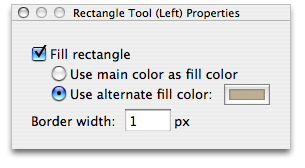

Using the rectangle tool
The rectangle tool allows you to draw rectangles and squares on your image. By default, it draws a pixel-wide border around the rectangle, but this can be changed in the rectangle tool's properties window:

The drawn rectangle can be either filled or unfilled. If you choose the first option for the fill color, whatever color is set to the mouse button you're using will be used to fill the rectangle. The second option gives you the opportunity to use an alternate shade for the inside of the rectangle.
Additionally, you can set the width of the border drawn around the rectangle by altering the field. There are a few key commands you might find useful:
To lock the drawing to a square:
Hold the shift key to restrict the rectangle tool to a 1:1 aspect ratio.
To make the initial point the center instead of a corner:
Holding the option key while drawing with the rectangle tool will place the initial click point at the center of the rectangle instead of in a corner.